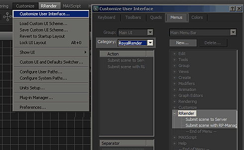
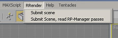

Usually, there are no setup or config file changes required to render 3ds Max files.
Backburner needs to be installed!
Although the Commandline Renderer of Max does not use Backburner, it still requires Backburner Dlls.
The 3dsmax installer thinks that if you do not want Backburner, then you do not want to network render at all.
So you have to install Backburner files on the machine. (Usually installed by default if you have not removed/unchecked it)
RR has setup a network plugin folder for 3dsmax.
Copy your plugins into the folder
[RR]\render_apps\renderer_plugins\3dsmax\MaxPlugins_2015\
Create the folder if it does not exist.
(of course you have to replace the 3dsmax version with the version you use)
Path customization:
It is possible that RR copies 3rd Party 3dsmax Plugins onto all machines. (e.g. mental Ray shaders)
Copy your plugins in the folder
[RR]\render_apps\renderer_plugins\3dsmax\win_x64\2015\
(of course you have to replace the 3dsmax version with the one you use)
Then uncomment (remove the rem# ) from the setenv file for 3dsMax to enable the copy.
After installing the "Submitter Plugins" via the rrWorkstation_installer (and restarting 3dsmax), you should have a new menu "RRender".
If you do not have that menu item or if it is not kept in your layout, please follow these steps:

After you have opened your scene, you can start the submitter via the main menu in Max.
If you have a default max scene, use the "Submit Scene" menu item.
If you are using the 3rd party plugin RP-manager, please use the second menu item.

With RR 7.0.11 we introduced a new submission menu item "Submit scene (New. VRay and Max renderer only)".
The old submission was renamed to "Submit scene (Old; all renderer)"
We have completely changed the rendering with 3dsmax to offer you features that the default Autodesk 3dsmax render does not offer (Like Stereo Cam rendering).
If you do not see the new submission, please follow the "Install" description above.